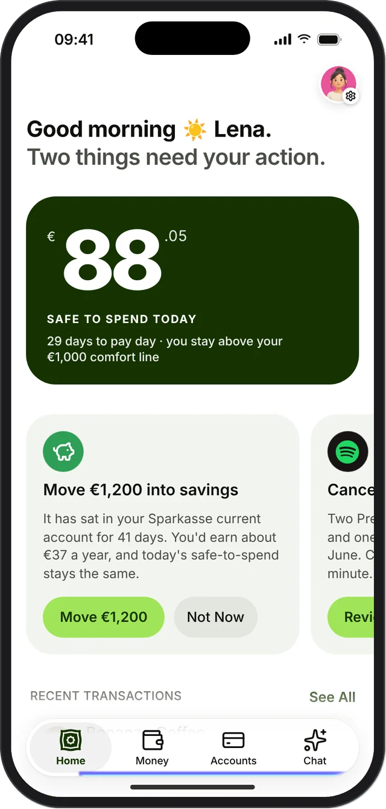
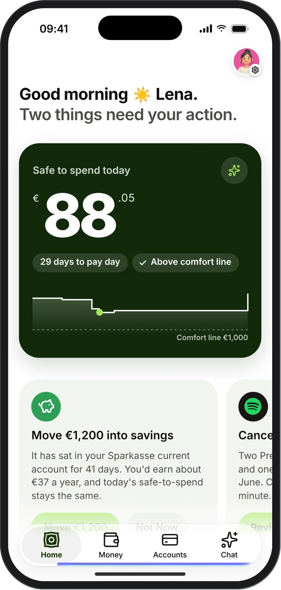
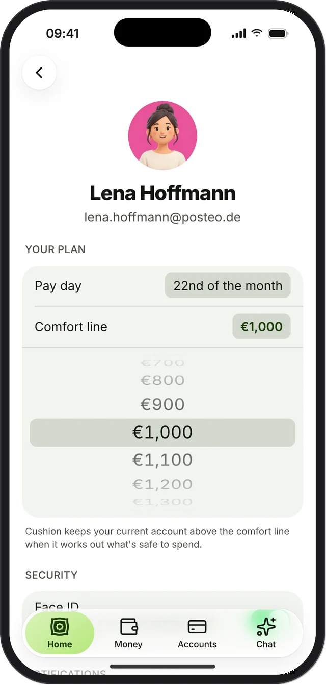
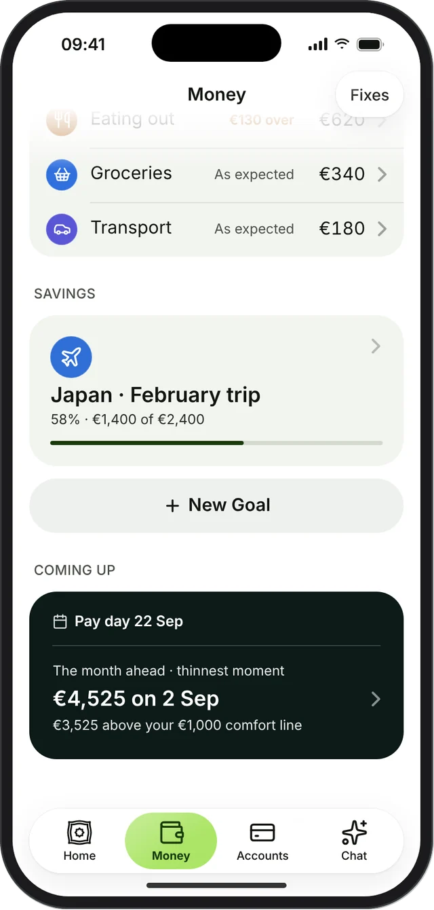
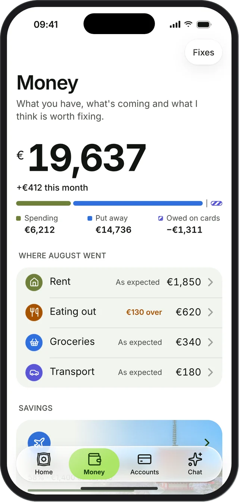
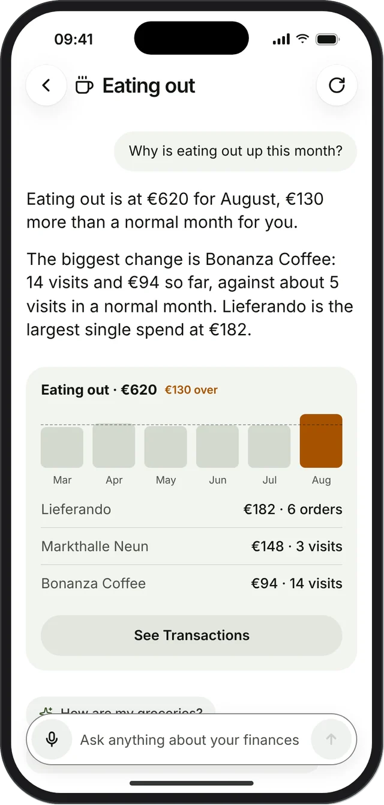

<meta charset="utf-8">
<title>Cushion Case Study</title>
<meta name="claude:viewport-fit-sides" content="cover">
<link rel="preconnect" href="https://fonts.googleapis.com">
<link rel="preconnect" href="https://fonts.gstatic.com" crossorigin>
<link rel="stylesheet" href="https://fonts.googleapis.com/css2?family=Inter:wght@300;400;500;600&display=swap">
<style>
/* Layout: one 880px case-study column, light paper sections broken by night-green "decision" bands, like a Behance project */
:root {
  --paper: #F1F2EE;      /* page */
  --card: #FFFFFF;       /* cards on paper */
  --ink: #121410;        /* text */
  --muted: #8A8F86;      /* second half of headlines, captions */
  --body: #5B6158;       /* running text */
  --line: #DFE2DA;
  --forest: #1A3A0A;     /* brand */
  --lime: #A6E35C;       /* actions, highlights */
  --lime-soft: #E7F5D3;  /* decision chips */
  --night: #0C1A18;      /* safe-to-spend card, dark bands */
  --night-2: #13241F;
  --night-line: rgba(255, 255, 255, .12);
  --night-muted: #8FA59D;
  --mint: #8EEADB;
  --sans: "Inter", -apple-system, BlinkMacSystemFont, "Helvetica Neue", Arial, sans-serif;
  color-scheme: light;
}
* { box-sizing: border-box; }
body { margin: 0; background: var(--paper); color: var(--ink); font-family: var(--sans); font-size: 16px; line-height: 1.5; -webkit-font-smoothing: antialiased; }
img { max-width: 100%; display: block; }
.wrap { max-width: 880px; margin: 0 auto; padding-left: max(16px, env(safe-area-inset-left, 0px)); padding-right: max(16px, env(safe-area-inset-right, 0px)); }
section { padding-block: 96px; }
section.tight { padding-block: 40px 96px; }

/* Section head: label column + two-tone headline */
.head { display: grid; grid-template-columns: 180px minmax(0, 1fr); gap: 24px; margin-bottom: 48px; }
.label { font-size: 13px; color: var(--forest); font-weight: 500; line-height: 1.4; }
.label .n { display: block; color: var(--muted); font-weight: 400; margin-top: 4px; font-variant-numeric: tabular-nums; }
.dark .label { color: var(--mint); }
.dark .label .n { color: var(--night-muted); }
h1, h2, h3 { margin: 0; font-weight: 400; letter-spacing: -.02em; text-wrap: balance; }
h2 { font-size: clamp(32px, 5vw, 44px); line-height: 1.08; }
h2 .soft, h1 .soft { color: var(--muted); }
.dark h2 .soft, .dark h1 .soft { color: var(--night-muted); }
.lede { margin: 16px 0 0; color: var(--body); max-width: 46ch; font-size: 15px; line-height: 1.6; }
.dark .lede { color: #B4C4BE; }
h3 { font-size: 17px; font-weight: 500; letter-spacing: -.01em; }
p { margin: 0; }
.small { font-size: 13px; color: var(--body); line-height: 1.5; }
.dark .small { color: #A9BAB3; }
.cap { font-size: 12px; color: var(--muted); }

.grid { display: grid; gap: 12px; }
.g2 { grid-template-columns: repeat(2, minmax(0, 1fr)); }
.g3 { grid-template-columns: repeat(3, minmax(0, 1fr)); }
.g4 { grid-template-columns: repeat(4, minmax(0, 1fr)); }
.card { background: var(--card); border-radius: 20px; padding: 20px; display: grid; gap: 8px; align-content: start; min-width: 0; }
.chip { display: inline-flex; align-items: center; gap: 6px; height: 26px; padding: 0 11px; border-radius: 99px; font-size: 12px; font-weight: 500; background: var(--lime-soft); color: var(--forest); width: fit-content; }
.chip.dot::before { content: ""; width: 6px; height: 6px; border-radius: 50%; background: currentColor; }
.dark .chip { background: rgba(142, 234, 219, .14); color: var(--mint); }

/* Placeholders the designer fills in */
.slot { border: 1.5px dashed #B9C0B2; border-radius: 10px; padding: 2px 8px; color: #7C8476; font-size: .62em; font-weight: 500; letter-spacing: 0; vertical-align: middle; white-space: nowrap; }
.slot-note { font-size: 12px; color: #7C8476; display: flex; gap: 6px; align-items: center; }
.slot-note::before { content: ""; width: 14px; height: 14px; border: 1.5px dashed #B9C0B2; border-radius: 4px; flex: none; }
.photo { position: relative; border-radius: 22px; overflow: hidden; background: #22302B; min-height: 280px; isolation: isolate; }
.photo img.ph { position: absolute; inset: 0; width: 100%; height: 100%; object-fit: cover; }
.photo .ph-empty { position: absolute; inset: 0; display: grid; place-content: center; justify-items: center; gap: 8px; padding: 24px; text-align: center; color: #9FB3AB; font-size: 12px; z-index: -1;
  background: radial-gradient(120% 90% at 70% 10%, #2C4B41 0%, #16261F 60%, #0F1B17 100%); }
.photo .ph-empty b { color: #D7E5DF; font-weight: 500; font-size: 13px; }
.photo .ph-empty svg { opacity: .7; }

/* Dark bands */
.dark { background: var(--night); color: #F2F5F1; }
.dark .card { background: rgba(255, 255, 255, .04); border: 1px solid var(--night-line); }
.glow { position: relative; isolation: isolate; }
.glow::before { content: ""; position: absolute; inset: 10% 15%; z-index: -1; background: radial-gradient(50% 50% at 50% 50%, rgba(46, 140, 112, .35), transparent 70%); filter: blur(10px); }

/* Phones */
.phones { display: flex; justify-content: center; align-items: flex-start; gap: 22px; flex-wrap: wrap; }
.phone { width: 236px; max-width: 100%; display: grid; gap: 14px; justify-items: center; min-width: 0; }
.phone img { width: 100%; filter: drop-shadow(0 24px 40px rgba(10, 30, 25, .22)); }
.dark .phone img { filter: drop-shadow(0 24px 50px rgba(0, 0, 0, .5)); }
.phone.lg { width: 270px; }
.phone.up { margin-top: -28px; }
.step { display: inline-flex; align-items: center; gap: 8px; height: 30px; padding: 0 13px; border-radius: 99px; font-size: 13px; background: var(--card); color: var(--ink); }
.step::before { content: ""; width: 6px; height: 6px; border-radius: 50%; background: var(--forest); }
.dark .step { background: rgba(255, 255, 255, .08); color: #E8EFEB; }
.dark .step::before { background: var(--mint); }

/* Floating callouts */
.float { position: absolute; z-index: 2; background: rgba(255, 255, 255, .94); border-radius: 16px; padding: 12px 16px; box-shadow: 0 16px 40px rgba(10, 30, 25, .16); display: grid; gap: 2px; min-width: 0; }
.float .k { font-size: 12px; color: var(--body); }
.float .v { font-size: 26px; font-weight: 600; letter-spacing: -.02em; color: var(--forest); font-variant-numeric: tabular-nums; }
.dark .float, .float.glass { background: rgba(255, 255, 255, .1); border: 1px solid rgba(255, 255, 255, .18); backdrop-filter: blur(14px); -webkit-backdrop-filter: blur(14px); box-shadow: none; color: #fff; }
.dark .float .k, .float.glass .k { color: #C7D6D0; }
.dark .float .v, .float.glass .v { color: #fff; }

/* Hero */
.hero { background: var(--night); color: #fff; overflow: hidden; }
.hero .inner { position: relative; isolation: isolate; padding-block: 110px 56px; min-height: 640px; display: grid; grid-template-columns: minmax(0, 1.1fr) minmax(0, .9fr); gap: 24px; align-items: end; }
.hero .dither { position: absolute; inset: -10% -30% 0 30%; z-index: -1; background: var(--mint); opacity: .32;
  -webkit-mask: url(img/dither.svg) right top / cover no-repeat; mask: url(img/dither.svg) right top / cover no-repeat; }
.hero .top { position: absolute; z-index: 3; left: 0; right: 0; top: 36px; display: flex; justify-content: space-between; align-items: center; gap: 12px; flex-wrap: wrap; padding-left: inherit; padding-right: inherit; }
.brand { display: inline-flex; align-items: center; gap: 10px; font-size: 18px; font-weight: 500; letter-spacing: -.01em; }
.brand .mark { width: 30px; height: 30px; color: var(--lime); }
.tags { display: flex; gap: 6px; flex-wrap: wrap; }
.tags span { height: 30px; padding: 0 13px; border-radius: 99px; display: inline-flex; align-items: center; font-size: 13px; background: rgba(255, 255, 255, .1); border: 1px solid rgba(255, 255, 255, .14); }
.hero h1 { font-size: clamp(42px, 7vw, 68px); line-height: 1.02; letter-spacing: -.035em; font-weight: 400; }
.hero h1 .soft { color: #8FA59D; }
.ask { display: grid; gap: 4px; max-width: 250px; margin-bottom: 26px; padding: 12px 14px; border-radius: 14px; background: rgba(255, 255, 255, .1); border: 1px solid rgba(255, 255, 255, .18); backdrop-filter: blur(12px); -webkit-backdrop-filter: blur(12px); font-size: 13px; }
.ask b { font-weight: 500; display: flex; align-items: center; gap: 6px; }
.ask b svg { color: var(--lime); }
.ask span { color: #D3DFDA; }
.hero .shot { position: relative; justify-self: center; width: 280px; max-width: 100%; margin-bottom: -120px; }
.hero .shot img { filter: drop-shadow(0 30px 60px rgba(0, 0, 0, .55)); }
.hero .shot .float { right: -70px; top: 300px; }
@media (max-width: 760px) { .hero .shot .float { right: -8px; top: 220px; } }

/* Intro */
.intro p.big { font-size: clamp(22px, 3vw, 26px); line-height: 1.35; letter-spacing: -.015em; max-width: 30ch; }
.intro p.big b { font-weight: 500; }
.intro p.big .soft { color: var(--muted); }
.stat { background: var(--card); border-radius: 16px; padding: 16px; display: grid; gap: 4px; align-content: start; }
.stat .v { font-size: 24px; color: var(--forest); letter-spacing: -.02em; }
.meta { display: grid; margin-top: 32px; border-top: 1px solid var(--line); }
.meta div { display: flex; justify-content: space-between; gap: 16px; padding: 14px 0; border-bottom: 1px solid var(--line); font-size: 14px; }
.meta dt { color: var(--muted); }
.meta dd { margin: 0; text-align: right; }

/* Problem */
.quote { font-size: 22px; line-height: 1.3; letter-spacing: -.015em; }
.quote em { font-style: normal; color: var(--forest); }

/* Process */
.phase { display: grid; gap: 10px; align-content: start; min-width: 0; }
.phase .art { aspect-ratio: 1 / 1; border-radius: 20px; background: #E3E7DF; display: grid; place-items: center; overflow: hidden; padding: 14px; }
.phase .art img { max-height: 100%; width: auto; border-radius: 8px; }
.mini { background: var(--card); border-radius: 14px; padding: 12px 14px; box-shadow: 0 10px 24px rgba(10, 30, 25, .1); display: grid; gap: 2px; }
.mini .k { font-size: 12px; color: var(--body); }
.mini .v { font-size: 22px; color: var(--forest); font-weight: 500; }
.phase .wk { font-size: 12px; color: var(--forest); }
.phase ul { list-style: none; margin: 0; padding: 0; font-size: 13px; color: var(--body); display: grid; gap: 2px; }
.decision { background: #DCEFD0; border-radius: 14px; padding: 12px 14px; display: grid; gap: 4px; font-size: 13px; color: var(--ink); }
.decision b { font-size: 12px; font-weight: 500; color: var(--forest); }

/* Insights */
.insight { background: var(--card); border-radius: 20px; padding: 20px; display: grid; gap: 10px; align-content: start; }
.insight .row { display: flex; justify-content: space-between; font-size: 12px; color: var(--muted); }
.insight .pct { font-size: 52px; font-weight: 300; letter-spacing: -.03em; line-height: 1; }
.bar { height: 4px; border-radius: 2px; background: #E4EADF; overflow: hidden; }
.bar i { display: block; height: 100%; width: 0; background: var(--forest); }
.bar.unknown i { width: 100%; background: repeating-linear-gradient(90deg, #C9D0C2 0 6px, transparent 6px 12px); }

/* Personas */
.persona { display: grid; grid-template-columns: minmax(0, 220px) minmax(0, 1fr) minmax(0, 170px); gap: 24px; align-items: start; }
.persona .photo { min-height: 380px; }
.who { position: absolute; left: 12px; bottom: 12px; z-index: 2; padding: 6px 12px; border-radius: 99px; font-size: 12px; background: rgba(0, 0, 0, .35); color: #fff; backdrop-filter: blur(10px); -webkit-backdrop-filter: blur(10px); }
.facts { display: grid; border-top: 1px solid var(--line); }
.facts div { display: grid; grid-template-columns: 90px minmax(0, 1fr); gap: 12px; padding: 10px 0; border-bottom: 1px solid var(--line); font-size: 13px; }
.facts dt { color: var(--muted); }
.facts dd { margin: 0; }
.list { list-style: none; margin: 0; padding: 0; display: grid; gap: 4px; font-size: 13px; }
.list li { display: flex; gap: 8px; }
.list li::before { content: ""; width: 6px; height: 6px; border-radius: 50%; margin-top: 7px; flex: none; background: var(--forest); }
.list.warn li::before { background: #E3A13B; }
.helps { background: #DCEFD0; border-radius: 14px; padding: 12px 14px; display: grid; gap: 4px; font-size: 13px; }
.helps b { font-weight: 500; color: var(--forest); }

/* Principles + flow */
.pr .num { font-size: 30px; font-weight: 300; color: var(--forest); }
.flow { display: grid; grid-template-columns: repeat(4, minmax(0, 1fr)); gap: 0; align-items: stretch; }
.flow .col { background: var(--card); border-radius: 18px; padding: 16px; display: grid; gap: 8px; align-content: start; min-width: 0; }
.flow .col.go { background: var(--forest); color: #fff; }
.flow .col h3 { font-size: 15px; }
.flow .pill { font-size: 12px; padding: 5px 10px; border-radius: 99px; background: #EFF1EC; width: fit-content; }
.flow .go .pill { background: rgba(255, 255, 255, .14); }
.flow .arrow { display: none; }
.flowrow { display: grid; grid-template-columns: minmax(0, 1fr) 24px minmax(0, 1fr) 24px minmax(0, 1fr) 24px minmax(0, 1fr); align-items: center; }
.flowrow .to { text-align: center; color: var(--muted); }
.hub { display: grid; grid-template-columns: 220px 70px minmax(0, 1fr); align-items: center; gap: 0; }
.hub .node { justify-self: start; background: var(--forest); color: #fff; border-radius: 99px; padding: 6px 14px; font-size: 13px; }
.hub ul { list-style: none; margin: 0; padding: 0 0 0 18px; display: grid; gap: 10px; border-left: 1px solid #C8CEC2; }
.hub li { position: relative; background: var(--card); border-radius: 99px; padding: 6px 14px; font-size: 13px; width: fit-content; }
.hub li::before { content: ""; position: absolute; left: -19px; top: 50%; width: 18px; border-top: 1px solid #C8CEC2; }
.hub .wire { border-top: 1px solid #C8CEC2; }

/* Branding */
.logo-big { background: var(--forest); color: #fff; border-radius: 22px; min-height: 260px; display: grid; place-items: center; position: relative; overflow: hidden; isolation: isolate; }
.logo-big::after { content: ""; position: absolute; inset: 0; z-index: -1; background: var(--lime); opacity: .18; -webkit-mask: url(img/dither.svg) right top / cover no-repeat; mask: url(img/dither.svg) right top / cover no-repeat; }
.lockup { display: inline-flex; align-items: center; gap: 14px; font-size: 44px; font-weight: 600; letter-spacing: -.03em; }
.lockup .mark { width: 62px; height: 62px; color: var(--lime); }
.on { border-radius: 18px; min-height: 120px; padding: 14px; display: grid; align-content: space-between; gap: 18px; font-size: 12px; }
.on .lk { display: inline-flex; align-items: center; gap: 8px; font-size: 20px; font-weight: 600; letter-spacing: -.02em; justify-self: center; }
.on .lk .mark { width: 28px; height: 28px; }
.sw { border-radius: 16px; padding: 14px; min-height: 120px; display: grid; align-content: space-between; font-size: 13px; }
.sw .hex { font-size: 12px; opacity: .85; font-variant-numeric: tabular-nums; }
.type-card { display: grid; grid-template-columns: 180px minmax(0, 1fr); gap: 24px; align-items: center; }
.type-card .aa { font-size: 110px; line-height: 1; color: var(--forest); letter-spacing: -.04em; font-weight: 500; }
.weights { display: flex; gap: 16px; flex-wrap: wrap; font-size: 14px; }
.nums { font-size: 22px; font-weight: 600; letter-spacing: -.02em; font-variant-numeric: tabular-nums; }

/* Components */
.comp { background: var(--card); border-radius: 20px; padding: 12px; display: grid; gap: 10px; align-content: start; min-width: 0; }
.comp .stage { background: #E6EAE2; border-radius: 14px; min-height: 230px; display: grid; place-items: center; padding: 16px; }
.comp .stage.night { background: #1C2B26; }
.comp .stage img { width: 100%; max-width: 250px; filter: drop-shadow(0 10px 20px rgba(10, 30, 25, .12)); }
.comp .txt { padding: 4px 6px 6px; display: grid; gap: 2px; }

/* Decisions */
.opts { display: grid; grid-template-columns: repeat(2, minmax(0, 1fr)); gap: 12px; margin-top: 56px; }
.opt { border-radius: 18px; padding: 18px; display: grid; gap: 8px; align-content: start; background: rgba(255, 255, 255, .03); border: 1px solid var(--night-line); }
.opt.chosen { background: rgba(255, 255, 255, .07); border-color: rgba(142, 234, 219, .35); }
.opt .tag { font-size: 12px; padding: 4px 10px; border-radius: 99px; background: rgba(255, 255, 255, .1); width: fit-content; }
.opt.chosen .tag { background: var(--mint); color: var(--night); font-weight: 500; }
.opt h3 { font-size: 20px; font-weight: 400; }
.opt:not(.chosen) h3 { color: #B9C7C2; }
.cto { display: grid; grid-template-columns: repeat(3, minmax(0, 1fr)); gap: 20px; margin-top: 28px; }
.cto div { border-top: 1px solid var(--night-line); padding-top: 14px; display: grid; gap: 6px; }
.cto b { font-weight: 500; font-size: 13px; color: var(--mint); }
.cto p { font-size: 14px; color: #D7E2DE; }
.stage-wrap { position: relative; margin-top: 8px; }
.answers { display: grid; grid-template-columns: repeat(5, minmax(0, 1fr)); gap: 10px; margin-top: 40px; align-items: start; }
.answers figure { margin: 0; display: grid; gap: 8px; min-width: 0; }
.answers img { border-radius: 14px; background: #F0F2EC; }
.answers figcaption { font-size: 12px; color: #A9BAB3; }
.answers figcaption b { display: block; color: #fff; font-weight: 500; font-size: 13px; }

/* Iteration */
.iter { background: var(--card); border-radius: 22px; padding: 22px; display: grid; grid-template-columns: minmax(0, 190px) 30px minmax(0, 190px) minmax(0, 1fr); gap: 16px; align-items: center; }
.iter .ar { color: var(--muted); text-align: center; font-size: 20px; }
.iter .before img { opacity: .9; filter: grayscale(.2); }
.iter .what { display: grid; gap: 8px; }
.iter .what .k { font-size: 12px; color: var(--forest); }
.iter .what h3 { font-size: 22px; font-weight: 400; }

/* Final design */
.final-row { display: grid; grid-template-columns: repeat(3, minmax(0, 1fr)); gap: 20px; margin-top: 24px; }
.final-row div { border-top: 1px solid var(--line); padding-top: 12px; display: grid; gap: 4px; }
.dark .final-row div { border-color: var(--night-line); }
.panel { background: #E3E7DF; border-radius: 26px; padding: 44px 20px; position: relative; }
.split { display: grid; grid-template-columns: minmax(0, 1fr) minmax(0, 1fr); gap: 12px; }
.panel.night { background: radial-gradient(90% 80% at 75% 50%, #1D3D33 0%, var(--night) 70%); color: #fff; }

/* Outcome */
.res { background: var(--card); border-radius: 20px; padding: 20px; display: grid; gap: 10px; }
.res .big { font-size: 44px; font-weight: 300; letter-spacing: -.03em; line-height: 1; }
.dots { display: flex; gap: 5px; }
.dots i { width: 12px; height: 12px; border-radius: 50%; border: 1.5px dashed #B9C0B2; }
.paths { background: var(--card); border-radius: 20px; padding: 20px; display: grid; gap: 14px; margin-top: 12px; }
.paths .p { display: grid; gap: 8px; }
.paths .ph { display: flex; justify-content: space-between; font-size: 14px; font-weight: 500; }
.paths .ph span { color: var(--forest); font-weight: 400; }
.paths .steps { display: flex; flex-wrap: wrap; gap: 6px; }
.paths .steps span { font-size: 12px; padding: 5px 10px; border-radius: 99px; background: #EFF1EC; }
.paths .steps.short span { background: var(--lime-soft); color: var(--forest); }
.learn { display: grid; grid-template-columns: 180px repeat(3, minmax(0, 1fr)); gap: 20px; margin-top: 56px; }
.learn div { border-top: 1px solid var(--line); padding-top: 12px; display: grid; gap: 6px; }

/* Thanks */
.thanks .inner { display: grid; grid-template-columns: minmax(0, 1fr) auto; gap: 24px; align-items: center; }
.app-icon { width: 120px; height: 120px; border-radius: 28px; background: var(--forest); display: grid; place-items: center; box-shadow: 0 20px 50px rgba(0, 0, 0, .4); }
.app-icon .mark { width: 70px; height: 70px; color: var(--lime); }

@media (max-width: 760px) {
  section { padding-block: 64px; }
  .head { grid-template-columns: 1fr; gap: 10px; margin-bottom: 32px; }
  .g3, .g4 { grid-template-columns: repeat(2, minmax(0, 1fr)); }
  .hero .inner { grid-template-columns: 1fr; padding-top: 110px; min-height: 0; }
  .hero .shot { margin-bottom: -60px; }
  .hero .shot .float { left: -30px; }
  .persona { grid-template-columns: 1fr; }
  .persona .photo { min-height: 320px; }
  .flowrow { grid-template-columns: 1fr; gap: 8px; }
  .flowrow .to { transform: rotate(90deg); }
  .hub { grid-template-columns: 1fr; gap: 12px; }
  .hub .wire { display: none; }
  .type-card { grid-template-columns: 1fr; }
  .opts, .cto, .split { grid-template-columns: 1fr; }
  .answers { grid-template-columns: repeat(2, minmax(0, 1fr)); }
  .iter { grid-template-columns: minmax(0, 1fr) 24px minmax(0, 1fr); }
  .iter .what { grid-column: 1 / -1; }
  .final-row { grid-template-columns: 1fr; }
  .learn { grid-template-columns: 1fr; }
  .phone.up { margin-top: 0; }
}
@media (max-width: 460px) {
  .g2, .g3, .g4 { grid-template-columns: 1fr; }
  .phone, .phone.lg { width: 100%; max-width: 280px; }
}
@media (prefers-reduced-motion: no-preference) {
  .hero .shot { animation: rise .9s cubic-bezier(.2, .8, .2, 1) both; }
  @keyframes rise { from { transform: translateY(24px); } to { transform: none; } }
}
</style>

<!-- The Cushion mark, drawn once and reused -->
<svg width="0" height="0" style="position:absolute" aria-hidden="true">
  <defs>
    <mask id="cush-m" maskUnits="userSpaceOnUse" x="0" y="0" width="512" height="512"><rect width="512" height="512" fill="#fff"/><g fill="none" stroke="#000" stroke-width="16" stroke-linejoin="round"><path d="M103.5 103.5C163.2 114.3 182.3 87.5 256 87.5C329.7 87.5 348.8 114.3 408.5 103.5C397.7 163.2 424.5 182.3 424.5 256C424.5 329.7 397.7 348.8 408.5 408.5C348.8 397.7 329.7 424.5 256 424.5C182.3 424.5 163.2 397.7 103.5 408.5C114.3 348.8 87.5 329.7 87.5 256C87.5 182.3 114.3 163.2 103.5 103.5Z"/><path d="M256 177L279.1 200.1L311.9 200.1L311.9 232.9L335 256L311.9 279.1L311.9 311.9L279.1 311.9L256 335L232.9 311.9L200.1 311.9L200.1 279.1L177 256L200.1 232.9L200.1 200.1L232.9 200.1Z"/></g></mask>
    <symbol id="cush" viewBox="0 0 512 512"><path d="M57 57C129.7 78.4 156.9 39.5 256 39.5C355.1 39.5 382.3 78.4 455 57C433.6 129.7 472.5 156.9 472.5 256C472.5 355.1 433.6 382.3 455 455C382.3 433.6 355.1 472.5 256 472.5C156.9 472.5 129.7 433.6 57 455C78.4 382.3 39.5 355.1 39.5 256C39.5 156.9 78.4 129.7 57 57Z" fill="currentColor" stroke="currentColor" stroke-width="16" stroke-linejoin="round" mask="url(#cush-m)"/></symbol>
    <symbol id="spark" viewBox="0 0 24 24"><path fill="none" stroke="currentColor" stroke-width="2" stroke-linecap="round" stroke-linejoin="round" d="M11.017 2.814a1 1 0 0 1 1.966 0l1.051 5.558a2 2 0 0 0 1.594 1.594l5.558 1.051a1 1 0 0 1 0 1.966l-5.558 1.051a2 2 0 0 0-1.594 1.594l-1.051 5.558a1 1 0 0 1-1.966 0l-1.051-5.558a2 2 0 0 0-1.594-1.594l-5.558-1.051a1 1 0 0 1 0-1.966l5.558-1.051a2 2 0 0 0 1.594-1.594z"/><path fill="none" stroke="currentColor" stroke-width="2" stroke-linecap="round" d="M20 2v4M22 4h-4"/></symbol>
    <symbol id="cam" viewBox="0 0 24 24"><path fill="none" stroke="currentColor" stroke-width="1.6" stroke-linejoin="round" d="M4 8h3l2-3h6l2 3h3v11H4z"/><circle cx="12" cy="13" r="3.5" fill="none" stroke="currentColor" stroke-width="1.6"/></symbol>
  </defs>
</svg>

<!-- Hero -->
<header class="hero">
  <div class="wrap">
    <div class="inner">
      <div class="dither" aria-hidden="true"></div>
      <div class="top">
        <span class="brand"><svg class="mark" aria-hidden="true"><use href="#cush"/></svg>Cushion</span>
        <span class="tags"><span>Fintech</span><span>iOS app</span><span>AI coach</span><span>2026</span></span>
      </div>
      <div>
        <div class="ask"><b><svg width="14" height="14" aria-hidden="true"><use href="#spark"/></svg>Ask Cushion</b><span>“Can I afford a €600 flight in March?”</span></div>
        <h1>Spend today<br>without fearing <span class="soft">the 30th.</span></h1>
      </div>
      <div class="shot">
        
        <div class="float glass"><span class="k">Safe to spend today</span><span class="v">€88.05</span><span class="k">Every bill before pay day counted</span></div>
      </div>
    </div>
  </div>
</header>

<main>
<!-- 01 Intro -->
<section class="intro" style="padding-top:150px">
  <div class="wrap">
    <div class="head">
      <div class="label">Introduction<span class="n">01 / 15</span></div>
      <div>
        <p class="big"><b>Cushion</b> is an AI budgeting app for people on a salary who juggle a few accounts and bills that land at awkward times. It <span class="soft">works out what is safe to spend today,</span> and a coach you can ask turns every answer into a next step.</p>
        <div class="grid g3" style="margin-top:32px">
          <div class="stat"><span class="v"><span class="slot">? of 5</span></span><span class="small">found today’s safe spend without help</span></div>
          <div class="stat"><span class="v"><span class="slot">? of 5</span></span><span class="small">set a comfort line that fits their month</span></div>
          <div class="stat"><span class="v"><span class="slot">? of 5</span></span><span class="small">moved money through their bank without help</span></div>
        </div>
        <p class="slot-note" style="margin-top:10px">Add your figures from the moderated sessions</p>
        <dl class="meta">
          <div><dt>Timeline</dt><dd><span class="slot">Add timeline</span></dd></div>
          <div><dt>Platform</dt><dd>iOS mobile app</dd></div>
          <div><dt>Role</dt><dd>Product Designer</dd></div>
          <div><dt>Scope</dt><dd>Research, UX, UI, interactive prototype, testing</dd></div>
        </dl>
      </div>
    </div>
  </div>
</section>

<!-- 02 Problem -->
<section style="padding-top:0">
  <div class="wrap">
    <div class="head">
      <div class="label">The problem<span class="n">02 / 15</span></div>
      <div>
        <h2>People know their balance.<br><span class="soft">They can’t see the 30th.</span></h2>
        <p class="lede">A balance shows what is there today. It says nothing about rent on the 1st, car insurance on the 2nd or the salary on the 22nd. So people keep a buffer in their head, and still get caught out.</p>
      </div>
    </div>
    <div class="grid g2">
      <div class="photo">
        <div class="ph-empty"><svg width="28" height="28" aria-hidden="true"><use href="#cam"/></svg><b>Pexels photo</b>Person checking a banking app, close up, low light</div>
        <div class="float" style="right:14px;bottom:14px"><span class="k">Current account</span><span class="v" style="font-size:22px">€7,412.36</span><span class="k">Rent and insurance due in 8 days</span></div>
      </div>
      <div class="card" style="padding:24px;gap:18px;align-content:space-between">
        <div style="display:grid;gap:10px"><span class="label">What people told me</span>
        <p class="quote">“I’m fine most of the month. It’s the <em>week before pay day</em> I can’t read.”</p></div>
        <p class="slot-note">Swap in a real quote from your interviews</p>
      </div>
    </div>

    <div class="head" style="margin-top:96px;margin-bottom:32px">
      <div class="label">What Cushion does instead</div>
      <h2>A forecast, <span class="soft">not a ledger.</span></h2>
    </div>
    <div class="grid g4">
      <div class="card"><span class="chip">From insight 01</span><h3>One safe number</h3><p class="small">Every bill and transfer before pay day is counted, so the number on Home is already safe to spend.</p></div>
      <div class="card"><span class="chip">From insight 02</span><h3>A line it never crosses</h3><p class="small">You pick a comfort line. Cushion keeps your account above it until pay day.</p></div>
      <div class="card"><span class="chip">From insight 03</span><h3>Answers you can act on</h3><p class="small">Ask in your own words. Every answer ends in a card with live numbers and one action.</p></div>
      <div class="card"><span class="chip">From insight 04</span><h3>Your bank stays in charge</h3><p class="small">Cushion drafts every move. You approve it in your own bank app.</p></div>
    </div>
  </div>
</section>

<!-- 03 Process -->
<section style="padding-top:0">
  <div class="wrap">
    <div class="head">
      <div class="label">Process<span class="n">03 / 15</span></div>
      <div>
        <h2>Four phases.<br>Each one ended in a decision.</h2>
        <p class="lede">Each phase produced something concrete and closed with one choice that shaped the next.</p>
      </div>
    </div>
    <div class="grid g4">
      <div class="phase">
        <div class="art"><div class="mini"><span class="k">Interviews</span><span class="v"><span class="slot">Add</span></span></div></div>
        <span class="wk">Phase 1</span><h3 style="font-size:20px;font-weight:400">Research</h3>
        <ul><li>Interviews</li><li>Competitor audit</li><li>Personas</li></ul>
        <div class="decision"><b>Decision</b>Forecast to pay day instead of tracking what already happened.</div>
      </div>
      <div class="phase">
        <div class="art"></div>
        <span class="wk">Phase 2</span><h3 style="font-size:20px;font-weight:400">Ideation</h3>
        <ul><li>User flows</li><li>Answer card concepts</li><li>Low-fidelity screens</li></ul>
        <div class="decision"><b>Decision</b>Lead with a coach you can ask. Every answer ends in a card.</div>
      </div>
      <div class="phase">
        <div class="art"></div>
        <span class="wk">Phase 3</span><h3 style="font-size:20px;font-weight:400">Design</h3>
        <ul><li>Style guide</li><li>Components</li><li>High-fidelity screens</li></ul>
        <div class="decision"><b>Decision</b>Forest and lime, one number on Home, no red alarms.</div>
      </div>
      <div class="phase">
        <div class="art"><div class="mini"><span class="k">Found today’s safe spend</span><span class="v"><span class="slot">? of 5</span></span><span class="k">without help</span></div></div>
        <span class="wk">Phase 4</span><h3 style="font-size:20px;font-weight:400">Prototype and test</h3>
        <ul><li>Interactive prototype</li><li>Moderated sessions</li><li>Iteration</li></ul>
        <div class="decision"><b>Decision</b>Hand every money move to the bank to approve.</div>
      </div>
    </div>
  </div>
</section>

<!-- 04 Insights -->
<section style="padding-top:0">
  <div class="wrap">
    <div class="head">
      <div class="label">Research insights<span class="n">04 / 15</span></div>
      <div>
        <h2>The trouble was timing,<br><span class="soft">not overspending.</span></h2>
        <p class="lede">Four patterns kept coming back. People were careful with money. They lost track of when it would leave.</p>
        <div style="display:flex;gap:6px;flex-wrap:wrap;margin-top:16px"><span class="chip dot" style="background:#fff">Interviews</span><span class="chip dot" style="background:#fff">Competitor audit</span><span class="chip dot" style="background:#fff">Bank statement walkthroughs</span></div>
      </div>
    </div>
    <div class="grid g2">
      <div class="insight"><div class="row"><span>Insight 01</span><span class="slot">? of ?</span></div><span class="pct"><span class="slot" style="font-size:20px">?%</span></span><div class="bar unknown"><i></i></div><h3>were caught out by bills landing close together, not by big purchases.</h3><p class="small">Rent and insurance a day apart hurt more than a dinner out.</p><span class="chip">Led to the pay-day forecast</span></div>
      <div class="insight"><div class="row"><span>Insight 02</span><span class="slot">? of ?</span></div><span class="pct"><span class="slot" style="font-size:20px">?%</span></span><div class="bar unknown"><i></i></div><h3>kept a private buffer they never let their account fall below.</h3><p class="small">Everyone had a number. No app knew it.</p><span class="chip">Led to the comfort line</span></div>
      <div class="insight"><div class="row"><span>Insight 03</span><span class="slot">? of ?</span></div><span class="pct"><span class="slot" style="font-size:20px">?%</span></span><div class="bar unknown"><i></i></div><h3>trusted a number only when it came with a reason and a next step.</h3><p class="small">Charts showed what happened. Nobody said what to do.</p><span class="chip">Led to answer cards</span></div>
      <div class="insight"><div class="row"><span>Insight 04</span><span class="slot">? of ?</span></div><span class="pct"><span class="slot" style="font-size:20px">?%</span></span><div class="bar unknown"><i></i></div><h3>would not let an app move money without their bank confirming it.</h3><p class="small">Trust lived with the bank, not the budgeting app.</p><span class="chip">Led to bank hand-offs</span></div>
    </div>
    <p class="slot-note" style="margin-top:12px">Add the counts and sources from your research</p>
  </div>
</section>

<!-- 05 Personas -->
<section style="padding-top:0">
  <div class="wrap">
    <div class="head">
      <div class="label">User personas<span class="n">05 / 15</span></div>
      <div>
        <h2>Three people,<br><span class="soft">three money rhythms.</span></h2>
        <p class="lede">Lena is the main persona, and every screen in this case study shows her month.</p>
      </div>
    </div>
    <div class="persona">
      <div class="photo">
        <div class="ph-empty"><svg width="28" height="28" aria-hidden="true"><use href="#cam"/></svg><b>Pexels photo</b>Woman around 30 on her phone, warm indoor light</div>
        <span class="who">Lena · 31 · Berlin</span>
      </div>
      <div style="display:grid;gap:18px;min-width:0">
        <span class="chip">Main persona</span>
        <p class="quote" style="font-size:20px">“I’m careful with money. I just never know what’s already spoken for.”</p>
        <dl class="facts">
          <div><dt>Role</dt><dd>Product manager</dd></div>
          <div><dt>Income</dt><dd>€3,482 a month after tax, plus the odd freelance invoice</dd></div>
          <div><dt>Accounts</dt><dd>Sparkasse current account, two credit cards, an ETF plan</dd></div>
        </dl>
        <div style="display:grid;gap:8px"><h3 style="font-size:15px">Goals</h3><ul class="list"><li>Save €2,400 for a trip to Japan in February</li><li>Stop checking her balance before every purchase</li></ul></div>
        <div style="display:grid;gap:8px"><h3 style="font-size:15px">Pain points</h3><ul class="list warn"><li>Rent and car insurance land a day apart</li><li>Pays for subscriptions she forgot about</li></ul></div>
        <div class="helps"><b>How Cushion helps</b>One safe number each morning that already counts every bill before pay day.</div>
      </div>
      <div class="phone" style="width:170px"><span class="cap">Lena’s month in Cushion</span></div>
    </div>
    <div class="grid g2" style="margin-top:24px">
      <div class="card" style="padding:12px;gap:14px">
        <div class="photo" style="min-height:190px;border-radius:14px"><div class="ph-empty"><svg width="24" height="24" aria-hidden="true"><use href="#cam"/></svg><b>Pexels photo</b>Freelancer at a laptop in a café</div></div>
        <div style="padding:0 8px 8px;display:grid;gap:8px"><h3 style="font-size:20px;font-weight:400">Jonas</h3><span class="cap">34 · Freelance designer · Leipzig</span><span class="small" style="color:var(--forest)">€2,000 to €5,500 a month, variable</span><p class="small" style="color:var(--ink);font-size:15px">“Some months are great. I need to know if this one is.”</p><div class="helps"><b>How Cushion helps</b>The forecast uses invoices that are actually due, not an average month.</div></div>
      </div>
      <div class="card" style="padding:12px;gap:14px">
        <div class="photo" style="min-height:190px;border-radius:14px"><div class="ph-empty"><svg width="24" height="24" aria-hidden="true"><use href="#cam"/></svg><b>Pexels photo</b>Nurse paying at a market stall</div></div>
        <div style="padding:0 8px 8px;display:grid;gap:8px"><h3 style="font-size:20px;font-weight:400">Amira</h3><span class="cap">27 · Nurse on shifts · Hamburg</span><span class="small" style="color:var(--forest)">€2,700 a month, stable</span><p class="small" style="color:var(--ink);font-size:15px">“I take out cash and then it just disappears.”</p><div class="helps"><b>How Cushion helps</b>Cash withdrawals can be sorted into categories, so markets and taxis still count.</div></div>
      </div>
    </div>
  </div>
</section>

<!-- 06 Principles and flow -->
<section style="padding-top:0">
  <div class="wrap">
    <div class="head">
      <div class="label">Product direction<span class="n">06 / 15</span></div>
      <div>
        <h2>From insight<br><span class="soft">to structure.</span></h2>
        <p class="lede">The research became four principles. Every screen had to pass all four before it moved to high fidelity.</p>
      </div>
    </div>
    <div class="grid g4 pr">
      <div class="card"><span class="num">01</span><h3>One number first</h3><p class="small">Home answers what is safe to spend today before anything else.</p><span class="chip">From insight 01</span></div>
      <div class="card"><span class="num">02</span><h3>Every answer ends in an action</h3><p class="small">No paragraph without a card, a number and a button.</p><span class="chip">From insight 03</span></div>
      <div class="card"><span class="num">03</span><h3>Cushion drafts, you confirm</h3><p class="small">Nothing moves until you approve it in your bank.</p><span class="chip">From insight 04</span></div>
      <div class="card"><span class="num">04</span><h3>Calm by default</h3><p class="small">Encouraging words and forest green. Warnings only when you need to act.</p><span class="chip">From insight 02</span></div>
    </div>

    <div class="head" style="margin-top:96px;margin-bottom:32px">
      <div class="label">User flow</div>
      <h2>Two flows, <span class="soft">one calm path.</span></h2>
    </div>
    <h3 style="font-size:14px;margin-bottom:12px">Onboarding</h3>
    <div class="flowrow">
      <div class="flow-col col card"><h3 style="font-size:15px">Start</h3><span class="pill" style="font-size:12px;padding:5px 10px;border-radius:99px;background:#EFF1EC;width:fit-content">Welcome</span><span style="font-size:12px;padding:5px 10px;border-radius:99px;background:#EFF1EC;width:fit-content">Create account</span><span style="font-size:12px;padding:5px 10px;border-radius:99px;background:#EFF1EC;width:fit-content">Verify ID</span></div>
      <span class="to" aria-hidden="true">→</span>
      <div class="card"><h3 style="font-size:15px">Connect accounts</h3><span style="font-size:12px;padding:5px 10px;border-radius:99px;background:#EFF1EC;width:fit-content">Pick your banks</span><span style="font-size:12px;padding:5px 10px;border-radius:99px;background:#EFF1EC;width:fit-content">Approve in your bank</span></div>
      <span class="to" aria-hidden="true">→</span>
      <div class="card"><h3 style="font-size:15px">Your plan</h3><span style="font-size:12px;padding:5px 10px;border-radius:99px;background:#EFF1EC;width:fit-content">Pay day</span><span style="font-size:12px;padding:5px 10px;border-radius:99px;background:#EFF1EC;width:fit-content">Comfort line</span></div>
      <span class="to" aria-hidden="true">→</span>
      <div class="card" style="background:var(--forest);color:#fff"><h3 style="font-size:15px">Ready</h3><span style="font-size:12px;padding:5px 10px;border-radius:99px;background:rgba(255,255,255,.14);width:fit-content">Safe to spend</span><span style="font-size:12px;padding:5px 10px;border-radius:99px;background:rgba(255,255,255,.14);width:fit-content">Home</span></div>
    </div>
    <p class="cap" style="margin-top:10px">Cushion reads balances and bills from connected accounts. It never holds the keys to move money.</p>

    <div style="display:flex;gap:12px;align-items:baseline;margin:48px 0 18px;flex-wrap:wrap"><h3 style="font-size:14px">Everyday use</h3><span class="small">Home is the hub. Every task starts there and comes back, so nobody gets lost.</span></div>
    <div class="hub">
      <div class="phone" style="width:200px"></div>
      <div class="wire"></div>
      <div style="display:flex;align-items:center;gap:0;min-width:0">
        <span class="node">Home</span><span style="width:24px;border-top:1px solid #C8CEC2"></span>
        <ul>
          <li>Check today’s safe spend</li>
          <li>Ask the coach</li>
          <li>Act on a suggestion</li>
          <li>See the month ahead</li>
          <li>Track savings goals</li>
        </ul>
      </div>
    </div>
  </div>
</section>

<!-- 07 Branding -->
<section style="padding-top:0">
  <div class="wrap">
    <div class="head">
      <div class="label">Branding<span class="n">07 / 15</span></div>
      <div>
        <h2>Built to feel<br><span class="soft">steady.</span></h2>
        <p class="lede">A small identity: a forest green, one bright lime for actions, one typeface and a mark that holds money safe.</p>
      </div>
    </div>
    <div class="grid" style="grid-template-columns:minmax(0,1.6fr) minmax(0,1fr)">
      <div class="logo-big"><span class="lockup"><svg class="mark" aria-hidden="true"><use href="#cush"/></svg>Cushion</span></div>
      <div class="card" style="padding:22px"><svg width="34" height="34" style="color:var(--forest)" aria-hidden="true"><use href="#cush"/></svg><h3 style="font-size:20px;font-weight:400;margin-top:8px">A soft cushion around a coin.</h3><p class="small">The outer shape gives way a little, like a cushion. The coin in the middle stays put. Soft edges keep it friendly, not clinical.</p></div>
    </div>
    <div class="grid g3" style="margin-top:12px">
      <div class="on" style="background:#fff;border:1px solid var(--line)"><span class="lk" style="color:var(--forest)"><svg class="mark" aria-hidden="true"><use href="#cush"/></svg>Cushion</span><span class="cap">On light</span></div>
      <div class="on" style="background:var(--night);color:#fff"><span class="lk"><svg class="mark" style="color:var(--lime)" aria-hidden="true"><use href="#cush"/></svg>Cushion</span><span style="color:#9FB3AB">On night</span></div>
      <div class="on" style="background:var(--lime);color:var(--forest)"><span class="lk"><svg class="mark" aria-hidden="true"><use href="#cush"/></svg>Cushion</span><span>On lime</span></div>
    </div>
    <div class="grid" style="grid-template-columns:repeat(5,minmax(0,1fr));margin-top:12px">
      <div class="sw" style="background:var(--forest);color:#fff"><span>Forest</span><span class="hex">#1A3A0A<br>Brand and text on lime</span></div>
      <div class="sw" style="background:var(--lime);color:var(--forest)"><span>Lime</span><span class="hex">#A6E35C<br>Actions</span></div>
      <div class="sw" style="background:var(--night);color:#fff"><span>Night</span><span class="hex">#0C1A18<br>Safe-to-spend card</span></div>
      <div class="sw" style="background:var(--mint);color:var(--night)"><span>Mint</span><span class="hex">#8EEADB<br>Halftone texture</span></div>
      <div class="sw" style="background:var(--ink);color:#fff"><span>Ink</span><span class="hex">#121410<br>Text</span></div>
    </div>
    <div class="card type-card" style="margin-top:12px;padding:28px">
      <span class="aa">Aa</span>
      <div style="display:grid;gap:12px">
        <h3 style="font-size:28px;font-weight:400">Inter</h3>
        <p class="small">One typeface for everything, from the wordmark to the smallest label. Clear numbers at every size, so cents and dates never blur.</p>
        <div class="weights"><span style="font-weight:400">Regular</span><span style="font-weight:500">Medium</span><span style="font-weight:600">Semi Bold</span></div>
        <span class="nums">€88.05&nbsp;&nbsp;€1,430&nbsp;&nbsp;22 Sep</span>
      </div>
    </div>
  </div>
</section>

<!-- 08 Design system -->
<section style="padding-top:0">
  <div class="wrap">
    <div class="head">
      <div class="label">Design system<span class="n">08 / 15</span></div>
      <div>
        <h2>Six components<br><span class="soft">carry the product.</span></h2>
        <p class="lede">The library holds every state, but these six do most of the work. Each answer card shares one frame: a title, live numbers, then one main action.</p>
      </div>
    </div>
    <div class="grid g3">
      <div class="comp"><div class="stage night"></div><div class="txt"><h3>Safe-to-spend card</h3><p class="small">One number, the days to pay day and the comfort line. The sparkle asks the coach why.</p></div></div>
      <div class="comp"><div class="stage"></div><div class="txt"><h3>Answer card</h3><p class="small">Live numbers you can adjust, with the effect on your line shown as you drag.</p></div></div>
      <div class="comp"><div class="stage"></div><div class="txt"><h3>Suggestion card</h3><p class="small">One finding, the reason and a single action. Swipe through them on Home.</p></div></div>
      <div class="comp"><div class="stage"></div><div class="txt"><h3>Goal card</h3><p class="small">Progress at a glance, with a cover photo you choose. The photo fades so the text stays readable.</p></div></div>
      <div class="comp"><div class="stage"></div><div class="txt"><h3>Coming up card</h3><p class="small">Pay day and the lowest point before it, in plain words.</p></div></div>
      <div class="comp"><div class="stage"></div><div class="txt"><h3>Draft card</h3><p class="small">Every action the coach suggests starts as a draft. Confirm hands it to your bank.</p></div></div>
    </div>
  </div>
</section>
</main>

<!-- 09 Decision 01 -->
<section class="dark">
  <div class="wrap">
    <div class="head">
      <div class="label">Key decision 01<span class="n">09 / 15</span></div>
      <div>
        <h2>One number,<br><span class="soft">not a balance.</span></h2>
        <p class="lede">A balance makes people do the maths. Cushion does it for them: every bill and transfer before pay day comes off first, and the comfort line stays untouched.</p>
        <div style="margin-top:16px"><span class="chip">From insights 01 and 02</span></div>
      </div>
    </div>
    <div class="phones glow">
      <div class="phone"><span class="step">1 See one clear number</span></div>
      <div class="phone up"><span class="step">2 Set your own line</span></div>
      <div class="phone"><span class="step">3 Get told when it can’t work</span></div>
    </div>
    <div class="opts">
      <div class="opt"><span class="tag">Option A</span><h3>Balance with category budgets</h3><p class="small">Familiar, but people still had to subtract the bills themselves.</p></div>
      <div class="opt chosen"><span class="tag">Option B · Chosen</span><h3>A safe number with a comfort line</h3><p class="small">Bills are already counted. You choose the line, and Cushion keeps you above it until pay day.</p></div>
    </div>
    <div class="cto">
      <div><b>Constraint</b><p>The number had to come from real balances and scheduled bills, never a guess.</p></div>
      <div><b>Trade-off</b><p>A single number hides detail, so tapping it opens the month ahead with every bill.</p></div>
      <div><b>Outcome</b><p><span class="slot">Add result</span> found today’s safe spend without help.</p></div>
    </div>
  </div>
</section>

<!-- 10 Decision 02: the AI coach -->
<section class="dark" style="border-top:1px solid var(--night-line)">
  <div class="wrap">
    <div class="head">
      <div class="label">Key decision 02<span class="n">10 / 15</span></div>
      <div>
        <h2>Answers,<br><span class="soft">not paragraphs.</span></h2>
        <p class="lede">People trusted an answer when it came with the reason and a next step. So every reply from the coach ends in a card with live numbers and one thing to do.</p>
        <div style="margin-top:16px"><span class="chip">From insight 03</span></div>
      </div>
    </div>
    <div class="stage-wrap">
      <div class="phones glow">
        <div class="phone"><span class="step">1 Ask in your own words</span></div>
        <div class="phone lg up"><span class="step">2 Get the answer and why</span></div>
        <div class="phone"><span class="step">3 Act on it in the card</span></div>
      </div>
    </div>
    <div class="answers">
      <figure><figcaption><b>Can I afford it?</b>When it fits, and when it doesn’t</figcaption></figure>
      <figure><figcaption><b>Split a bill</b>Drag to see what stays above your line</figcaption></figure>
      <figure><figcaption><b>Transfer draft</b>Confirm, and your bank asks to approve</figcaption></figure>
      <figure><figcaption><b>Why is it up?</b>Six months and the places behind it</figcaption></figure>
      <figure><figcaption><b>Goal check</b>Where you’ll be, and how to get there sooner</figcaption></figure>
    </div>
    <div class="opts">
      <div class="opt"><span class="tag">Option A</span><h3>A chat that replies in text</h3><p class="small">Quick to build, but long answers meant people still had to work out what to do.</p></div>
      <div class="opt chosen"><span class="tag">Option B · Chosen</span><h3>Every answer ends in a card</h3><p class="small">Plain words first, then one card with the numbers and a single action you can take right there.</p></div>
    </div>
    <div class="cto">
      <div><b>Constraint</b><p>Every number in an answer had to come from the same forecast as Home, so they always agree.</p></div>
      <div><b>Trade-off</b><p>Chat is slower for a glance, so Home shows the safe number and the sparkle opens the reason.</p></div>
      <div><b>Outcome</b><p><span class="slot">Add result</span> got an answer they could act on without help.</p></div>
    </div>
  </div>
</section>

<!-- 11 Decision 03 -->
<section class="dark" style="border-top:1px solid var(--night-line)">
  <div class="wrap">
    <div class="head">
      <div class="label">Key decision 03<span class="n">11 / 15</span></div>
      <div>
        <h2>Cushion drafts.<br><span class="soft">Your bank approves.</span></h2>
        <p class="lede">People wouldn’t let a budgeting app move money on its own. So Cushion prepares the move, and the bank, the service or the inbox finishes it.</p>
        <div style="margin-top:16px"><span class="chip">From insight 04</span></div>
      </div>
    </div>
    <div class="phones glow">
      <div class="phone"><span class="step">1 Cushion spots it</span></div>
      <div class="phone up"><span class="step">2 Your bank approves</span></div>
      <div class="phone"><span class="step">3 Or the service’s own site</span></div>
    </div>
    <div class="opts">
      <div class="opt"><span class="tag">Option A</span><h3>Cushion moves money itself</h3><p class="small">One tap, but it asks people to trust a new app with their account.</p></div>
      <div class="opt chosen"><span class="tag">Option B · Chosen</span><h3>Hand off to the bank</h3><p class="small">Cushion fills in amount, account and reference. The bank app approves with Face ID, as it would any payment.</p></div>
    </div>
    <div class="cto">
      <div><b>Constraint</b><p>European payment rules require the bank to confirm payments started by a third party.</p></div>
      <div><b>Trade-off</b><p>One extra screen, so Cushion fills in every field and returns you to where you were.</p></div>
      <div><b>Outcome</b><p><span class="slot">Add result</span> moved money to savings without help.</p></div>
    </div>
  </div>
</section>

<!-- 12 Iteration -->
<section>
  <div class="wrap">
    <div class="head">
      <div class="label">Iteration<span class="n">12 / 15</span></div>
      <div>
        <h2>Structure first,<br><span class="soft">polish second.</span></h2>
        <p class="lede">The layout settled early. Then every screen went through rounds of review in the working prototype.</p>
      </div>
    </div>
    <div class="grid">
      <div class="iter">
        <div class="before"></div>
        <span class="ar" aria-hidden="true">→</span>
        <div></div>
        <div class="what"><span class="k">Earlier → Final</span><h3>Safe to spend</h3><p class="small">Problem: the number came first and the label hid in small capitals below, so people read “88” without knowing what it meant. Fix: the label leads, the reasons became two pills, and the card moved to night green with a soft halftone.</p></div>
      </div>
      <div class="iter">
        <div class="before"></div>
        <span class="ar" aria-hidden="true">→</span>
        <div></div>
        <div class="what"><span class="k">Earlier → Final</span><h3>Drop the chart</h3><p class="small">Problem: a balance chart inside the card pulled attention from the one number that mattered. Fix: the chart moved to the month ahead, and the card kept only what helps a decision today.</p></div>
      </div>
      <div class="iter">
        <div class="before"></div>
        <span class="ar" aria-hidden="true">→</span>
        <div></div>
        <div class="what"><span class="k">Earlier → Final</span><h3>Comfort line</h3><p class="small">Problem: a wheel in €100 steps up to €3,000 didn’t fit everyone, and allowed lines no account could keep. Fix: type any amount, see the effect on today as you type, and get told the highest line that can actually hold.</p></div>
      </div>
      <div class="iter">
        <div class="before"></div>
        <span class="ar" aria-hidden="true">→</span>
        <div></div>
        <div class="what"><span class="k">Earlier → Final</span><h3>Goals you can picture</h3><p class="small">Problem: every goal looked the same, so saving felt like admin. Fix: each goal can carry a cover photo, brightened and faded behind the text, on the card and across the top of the goal page.</p></div>
      </div>
    </div>
  </div>
</section>

<!-- 13 Final: home and money -->
<section style="padding-top:0">
  <div class="wrap">
    <div class="head">
      <div class="label">Final design<br>Home and money<span class="n">13 / 15</span></div>
      <div>
        <h2>Every euro<br><span class="soft">already spoken for.</span></h2>
        <p class="lede">Home answers one question first: how much can Lena safely spend today? The month ahead, goals and fixes sit one tap away.</p>
      </div>
    </div>
    <div class="panel">
      <div class="float" style="left:16px;top:16px"><span class="k">Safe to spend today</span><span class="v">€88.05</span></div>
      <div class="phones">
        <div class="phone"></div>
        <div class="phone lg up"></div>
        <div class="phone"></div>
      </div>
      <div class="float" style="right:16px;bottom:16px"><span class="k">Thinnest moment</span><span class="v">€4,525</span><span class="k">2 Sep, €3,525 above the line</span></div>
    </div>
    <div class="final-row">
      <div><h3>Money</h3><p class="small">What you have, where August went and what’s worth fixing, with cents only on real money.</p></div>
      <div><h3>Home</h3><p class="small">Safe to spend, suggestions with one action each, savings and recent spending.</p></div>
      <div><h3>The month ahead</h3><p class="small">Every bill and payment to pay day, and the lowest point drawn against your line.</p></div>
    </div>

    <div class="split" style="margin-top:56px">
      <div class="panel" style="padding:36px 16px"><div class="phones"><div class="phone" style="width:210px"></div></div></div>
      <div class="panel" style="padding:36px 16px"><div class="phones"><div class="phone" style="width:210px"></div></div></div>
    </div>
    <div class="final-row" style="grid-template-columns:repeat(2,minmax(0,1fr))">
      <div><h3>Goals</h3><p class="small">How far along you are, when you’ll get there and what to change to arrive in time.</p></div>
      <div><h3>Make it yours</h3><p class="small">Pick an icon and a cover photo. The photo gets the same calm treatment everywhere.</p></div>
    </div>
  </div>
</section>

<!-- 14 Final: AI coach -->
<section class="dark">
  <div class="wrap">
    <div class="head">
      <div class="label">Final design<br>AI coach and fixes<span class="n">14 / 15</span></div>
      <div>
        <h2>A coach<br><span class="soft">that does the maths.</span></h2>
        <p class="lede">Ask what you can afford. Find out why a category is up. Let Cushion spot what’s worth fixing, then finish it in two taps.</p>
      </div>
    </div>
    <div class="phones glow">
      <div class="phone"><span class="step">1 Ask why</span></div>
      <div class="phone up"><span class="step">2 Confirm the draft</span></div>
      <div class="phone"><span class="step">3 See what changed</span></div>
    </div>
    <div class="final-row">
      <div><h3 style="color:#fff">Plain-language answers</h3><p class="small">Each answer names the bills, dates and places behind it, then the card shows the numbers.</p></div>
      <div><h3 style="color:#fff">One-tap drafts</h3><p class="small">Nothing is saved or sent until you confirm, so a misread request never slips through.</p></div>
      <div><h3 style="color:#fff">Fixes it finds</h3><p class="small">A second Spotify plan, a parking refund, idle cash. Each comes with the saving and one action.</p></div>
    </div>
  </div>
</section>

<!-- 15 Testing -->
<section>
  <div class="wrap">
    <div class="head">
      <div class="label">Testing and outcome<span class="n">15 / 15</span></div>
      <div>
        <h2>Designed to make<br><span class="soft">money feel readable.</span></h2>
        <p class="lede">I tested the prototype in moderated sessions with people on a monthly salary. These were the core tasks.</p>
      </div>
    </div>
    <div class="grid g3">
      <div class="res"><span class="big"><span class="slot" style="font-size:20px">? of 5</span></span><div class="dots"><i></i><i></i><i></i><i></i><i></i></div><h3 style="font-size:15px">Find today’s safe spend</h3><span class="cap">completed without help</span></div>
      <div class="res"><span class="big"><span class="slot" style="font-size:20px">? of 5</span></span><div class="dots"><i></i><i></i><i></i><i></i><i></i></div><h3 style="font-size:15px">Ask if a purchase fits</h3><span class="cap">completed without help</span></div>
      <div class="res"><span class="big"><span class="slot" style="font-size:20px">? of 5</span></span><div class="dots"><i></i><i></i><i></i><i></i><i></i></div><h3 style="font-size:15px">Move money to a goal</h3><span class="cap">completed without help</span></div>
    </div>
    <div class="paths">
      <span class="label">Two ways to save for a goal</span>
      <div class="p"><div class="ph">Ask the coach <span>3 steps</span></div><div class="steps short"><span>“Put €50 towards Japan”</span><span>Confirm draft</span><span>Approve in bank</span></div></div>
      <div class="p"><div class="ph">From the goal <span style="color:var(--muted)">5 steps</span></div><div class="steps"><span>Money</span><span>Open goal</span><span>Add Money</span><span>Enter amount</span><span>Approve in bank</span></div></div>
    </div>
    <div class="learn">
      <span class="label">What I learned</span>
      <div><h3>Timing beats totals</h3><p class="small">People didn’t need to know where money went. They needed to know when it would leave.</p></div>
      <div><h3>Trust sits with the bank</h3><p class="small">Handing the last step to the bank made a new app feel safe enough to act on.</p></div>
      <div><h3>Next, I would test</h3><p class="small">Whether a morning nudge with the safe number keeps people coming back after the first month.</p></div>
    </div>
  </div>
</section>

<!-- Thanks -->
<section class="dark thanks">
  <div class="wrap">
    <div class="inner">
      <div style="display:grid;gap:18px">
        <span class="brand"><svg class="mark" aria-hidden="true"><use href="#cush"/></svg>Cushion</span>
        <h2>Thank you<br><span class="soft">for scrolling.</span></h2>
        <p class="lede">Want to talk about a project? Message me through this profile.</p>
      </div>
      <div style="display:grid;gap:10px;justify-items:center"><span class="app-icon"><svg class="mark" aria-hidden="true"><use href="#cush"/></svg></span><span class="small">Cushion</span></div>
    </div>
  </div>
</section>
